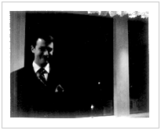
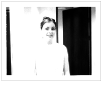

|
|
 |
 |
|
Between the two of us I think we had an item from every decade
since 1950. We certainly looked different from most of the people there. Except
for Halldor who, also sporting the nostalgic spirit, showed up in a lovely
little number with wide lapels and pant legs.
Definitely rivaling Kevin's tie for 70's chic. We didn't manage to get
a picture of this piece. Halldor was too busy shaking his booty on the dance floor
to stand still long enough for a photo.
|
|
| <------ | ------> |
| archives | main | chat |
* |
dummytalk | outings | little things |